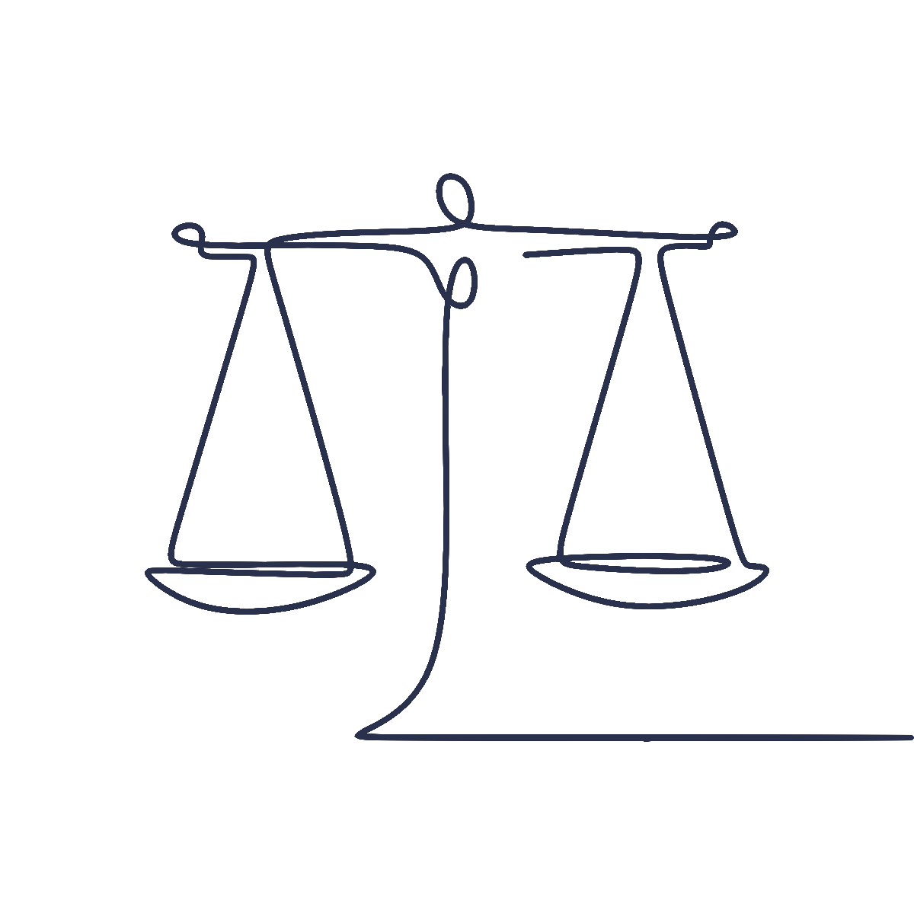

<nav class="navbar navbar-expand-lg navbar-light fixed-top">
  <div class="container-fluid">
    <a class="navbar-brand" routerLink="/" data-bs-toggle="collapse" data-bs-target=".navbar-collapse.show" (click)="irA('home')">KULMAN - MATORRAS</a>
    <button class="navbar-toggler" type="button" data-bs-toggle="collapse" data-bs-target="#navbarNavAltMarkup" aria-controls="navbarNavAltMarkup" aria-expanded="false" aria-label="Toggle navigation">
      <span class="navbar-toggler-icon"></span>
    </button>
    <div class="collapse navbar-collapse" id="navbarNavAltMarkup">
      <div class="navbar-nav ms-auto">
        <a  class="nav-link" data-bs-toggle="collapse" data-bs-target=".navbar-collapse.show" routerLinkActive="active" routerLink="" (click)="irA('home')">Home</a>
        <a  class="nav-link" data-bs-toggle="collapse" data-bs-target=".navbar-collapse.show" routerLinkActive="active" routerLink="" (click)="irA('nosotras')">Nosotras</a>
        <a  class="nav-link" data-bs-toggle="collapse" data-bs-target=".navbar-collapse.show" routerLinkActive="active" routerLink="" (click)="irA('servicios')">Servicios</a>
        <a  class="nav-link" data-bs-toggle="collapse" data-bs-target=".navbar-collapse.show" routerLinkActive="active" routerLink="" (click)="irA('contacto')">Contacto</a>
      </div>
    </div>
  </div>
</nav>